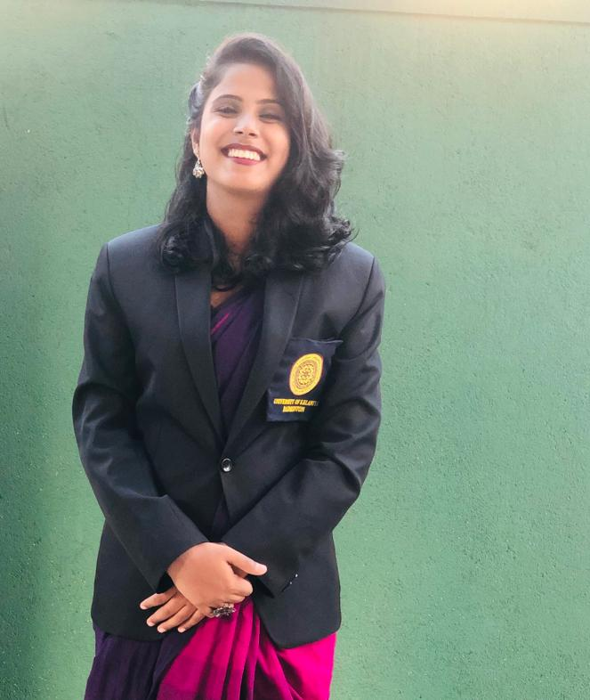

Badminton
Badminton
Badminton is a racquet sport played using racquets to hit a shuttlecock across a net. Although it may be played with larger teams, the most common forms of the game are "singles" (with one player per side) and "doubles"
(with two players per side). Badminton is often played as a casual outdoor activity in a yard or on a beach; formal games are played on a rectangular indoor court. Points are scored by striking the shuttlecock
with the racquet and landing it within the opposing side's half of the court.
Each side may only strike the shuttlecock once before it passes over the net. Play ends once the shuttlecock has struck the floor or if a fault has been called by the umpire, service judge, or (in their absence) the
opposing side.
UOK Badminton
> There are two badminton teams (Men & Women) in the UOK.
> In 2015, University of Kelaniya has affiliated to Western Province Badminton Association.
> Badminton women team was 1st Runner-up of the Inter University Championship-2017.
> "FASTER 2017" 7th Age Group & Invitational University Badminton Championship event was conducted by Department of Physical Education of University of Kelaniya from 01st – 05th april in 2017
held at Sports Complex S.Thomas’ College, Mt.Lavinia.
 |
 | ||
| Kasun Gimhana Captain(men) Faculty of Science 0717742278 |
Athesh Siriwardhene Vice-Captain(men) Faculty of Science 0717223371 |
L.H.kankanamge Captain(women) 0776310165 |
Thelini Bandara Vice-Captain(women) 0711465030 |
|
24 |
24 |
2 |
Contact Us :
University of Kelaniya,
Dalugama, Kelaniya,
Sri Lanka, 11600.
Tel: +94 (0) 112 903 201
Fax: +94 (0) 112 903 203
Email: deansc@kln.ac.lk
©2019 University of Kelaniya. All Rights Reserved. Designed By the Faculty Web Team